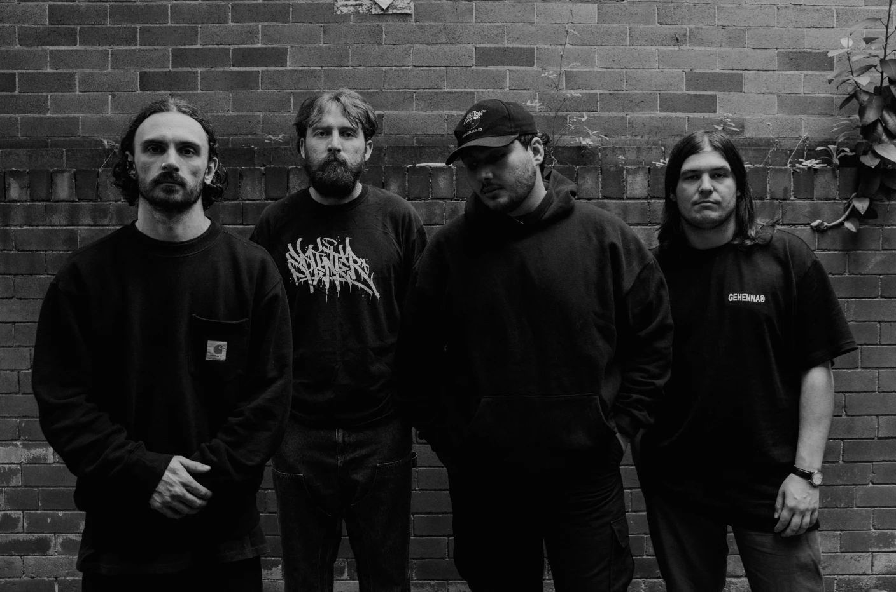

Every blast beat, every recycled 0-0-0-0-0-0-0-0-0-12 riff delivers blows to your ears unlike anything else.
The Earth trembles in the presence of this band, which comprsises of
If it wasn't already obvious enough, their sound comprises of ground-shaking drums followed by guitars tuned so low that you won't be able to hear anything after just a casual listen
Now, Justice of the Damned can't be compared to any other band out in the scene right now. Their debut album can be slightly related to Thy Art is Murder, but they rapidly deviated from the traditional metalcore route which most Australian bands undertake and went for a more darker sound, towards death metal territory.
Their music is available on Spotify, Youtube, Amazon, Bandcamp, Apple Music and have viynls and t-shirts that are available for purchase, along with several planned tours across Australia in notable places like Crowbar in Melbourne.
go back!